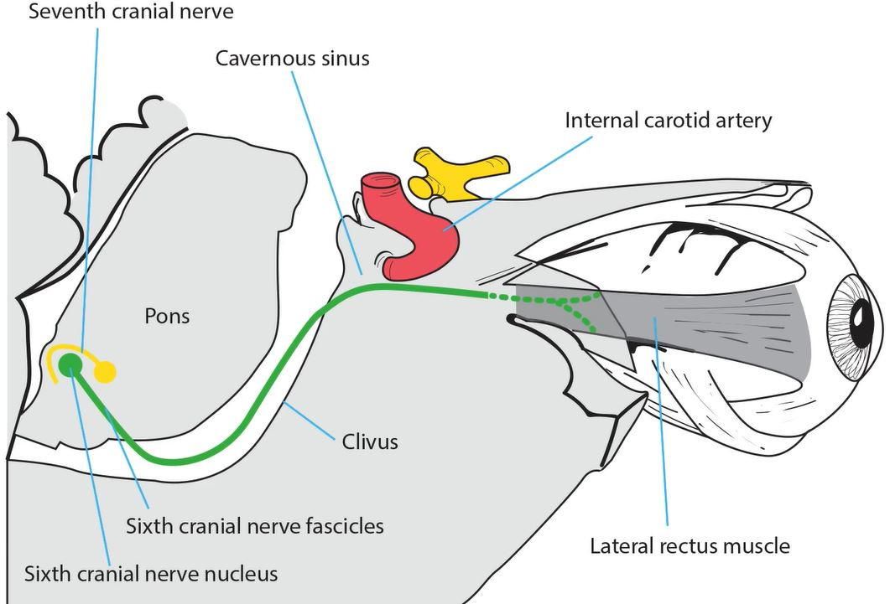

Sixth Nerve

-
Nuclear segment
- lies in floor of fourth ventricle at pontomedullary junction
-
Internuclear segment
- axons leave nucleus and travel in contralateral medial longitudinal fasciculus, ending on contralateral medial rectus subnucleus to mediate adduction of contralateral eye
-
Fascicular segment
- axons proceed ventrally through pontocerebellar and corticospinal tracts to exit brainstem at pontomedullary junction eventually to supply ipsilateral lateral rectus muscle
-
Subarachnoid segment
- travels rostrally along clivus, passing through Dorello’s canal into cavernous sinus
-
Cavernous segment
- enters floor of cavernous sinus, where it lies inferolateral to internal carotid artery within venous plexus
-
Orbital segment
- enters orbit through superior orbital fissure within muscle cone to supply lateral rectus muscle


-
Nuclear lesion
- congenital lesion usually produces deficient abduction and esotropia (Duane retraction syndrome Type 1), but may cause deficient adduction (Duane retraction syndrome Type 2), or combination of deficient abduction and adduction (Duane retraction syndrome Type 3)
-
Tip: in Duane syndrome, gaze deficit does not occur because interneuronal axons that travel in MLF are spared
- acquired lesion affects both fascicular axons and interneuronal axons, producing ipsilateral gaze palsy--impairment of all ipsilateral horizontal gaze movements, including saccades, pursuit, and vestibulo-ocular reflex
- often accompanied by ipsilateral lower motor seventh nerve palsy because seventh nerve fascicles curl dorsally around sixth nerve nucleus before exiting brainstem
- common causes: stroke, hemorrhage, inflammation
-
Internuclear (medial longitudinal fasciculus) lesion
- causes slow, reduced, or absent adduction of ipsilateral eye (“internuclear ophthalmoplegia”)
- often accompanied by abducting nystagmus of contralateral eye
- common causes: demyelination in youth and stroke in adults
-
Combined nuclear and ipsilateral internuclear lesion
- causes ipsilateral gaze palsy (sometimes with contralateral gaze deviation) and adduction deficit of ipsilateral eye (“one-and-a-half syndrome”)
- common causes: stroke, hemorrhage, inflammation
-
Fasicular lesion
- causes impairment of ipsilateral abduction and usually esotropia
- may be accompanied by ataxia, nystagmus, ipsilateral facial and contralateral extremity weakness
- common causes: stroke, hemorrhage, inflammation
-
Combined fascicular and ipsilateral internuclear lesion
- causes ipsilateral abduction and adduction deficits
- common causes: ischemic stroke, hemorrhage, inflammation
-
Subarachnoid lesion
- causes ipsilateral abduction deficit and esotropia
- two kinds of palsies: “localizing” and “false-localizing”
- “localizing palsy” caused by lesions along the subarachnoid course of sixth nerve, including head trauma, meningitis, subarachnoid hemorrhage, and masses of clivus and sphenoid bone/sinus
- Missing GIF “false-localizing palsy” caused by conditions affecting sixth nerve from a distance, including intracranial hypertension and hypotension, which produce downward displacement of brainstem and tugging on sixth cranial nerve tethered at Dorello’s canal
-
Tip: sixth nerve palsy often occurs at dorello’s canal from compression or inflammation, medially by clivus lesion and laterally by petrous apex lesion
-
Missing GIF
Cavernous Lesion
- causes ipsilateral abduction deficit and esotropia
- often accompanied by ipsilateral Horner syndrome, trigeminal deficits, third and fourth nerve palsies
- common causes:cavernous aneurysms, tumors, venous thrombosis, fistulas, inflammations
-
Tip: sixth nerve is especially vulnerable to cavernous aneurysms and traumatic fistulas because it lies close to carotid artery within cavernous sinus, whereas other ocular motor nerves lie in outer wall of cavernous sinus
-
Orbital lesion
- Causes ipsilateral abduction deficit and esotropia
-
Tip: orbital lesions rarely cause sixth nerve palsy because orbital segment of nerve enters belly of lateral rectus muscle in posterior orbit; abduction deficits from orbital disease usually result from damage to lateral rectus muscle itself